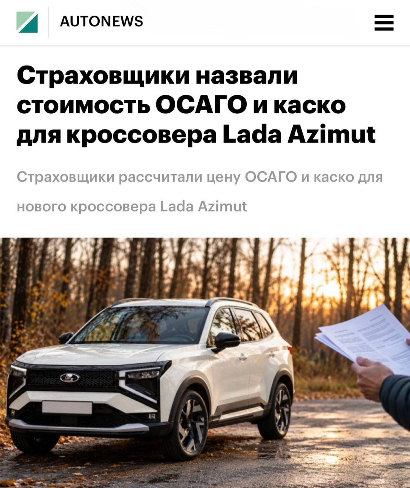

Тачки и Точка
@tachki
Тачки и Точка
@tachki
Страховка для новой LADA Azimut может обойтись почти в ЧЕТЫРЕ РАЗА дешевле в зависимости от компании РБК сравнил предложения шести крупных страховщиков для будущего кроссовера АвтоВАЗа.

Страховка для новой LADA Azimut может обойтись почти в ЧЕТЫРЕ РАЗА дешевле в зависимости от компании — РБК сравнил предложения шести крупных страховщиков для будущего кроссовера АвтоВАЗа.
Самые выгодные условия в расчётах предложило СберСтрахование. Для опытного московского водителя с 15-летним стажем ОСАГО на версию мощностью 120 л. с. обойдётся примерно в 5,8 тысячи рублей, что минимум на 200 рублей выгоднее предложений других страховщиков, а каско — в 37 тысяч. У конкурентов последнее может стоить до 110 тысяч рублей.
Для водителя из Краснодарского края с пятилетним стажем разница тоже заметная: каско в СберСтраховании оценили в 52,4 тысячи рублей — минимум на 4,4 тысячи дешевле других предложений. Для более мощной версии Azimut экономия может достигать 20 тысяч рублей.
Пока это предварительные расчёты, но уже понятно, что при покупке машины стоит сравнивать не только цены в автосалонах.
Иногда на одной страховке можно серьёзно сэкономить.
🚙 Тачки и Точка
Самые выгодные условия в расчётах предложило СберСтрахование. Для опытного московского водителя с 15-летним стажем ОСАГО на версию мощностью 120 л. с. обойдётся примерно в 5,8 тысячи рублей, что минимум на 200 рублей выгоднее предложений других страховщиков, а каско — в 37 тысяч. У конкурентов последнее может стоить до 110 тысяч рублей.
Для водителя из Краснодарского края с пятилетним стажем разница тоже заметная: каско в СберСтраховании оценили в 52,4 тысячи рублей — минимум на 4,4 тысячи дешевле других предложений. Для более мощной версии Azimut экономия может достигать 20 тысяч рублей.
Пока это предварительные расчёты, но уже понятно, что при покупке машины стоит сравнивать не только цены в автосалонах.
Иногда на одной страховке можно серьёзно сэкономить.
🚙 Тачки и Точка